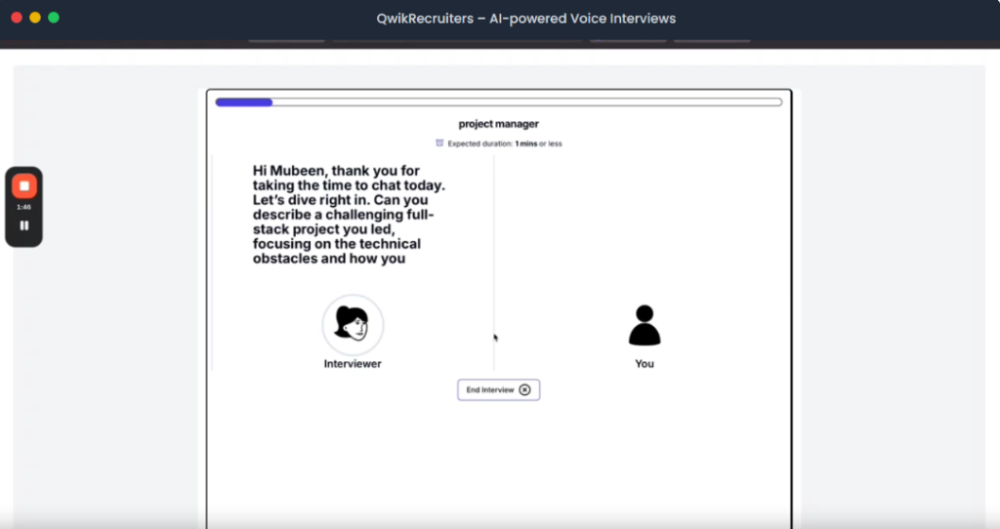
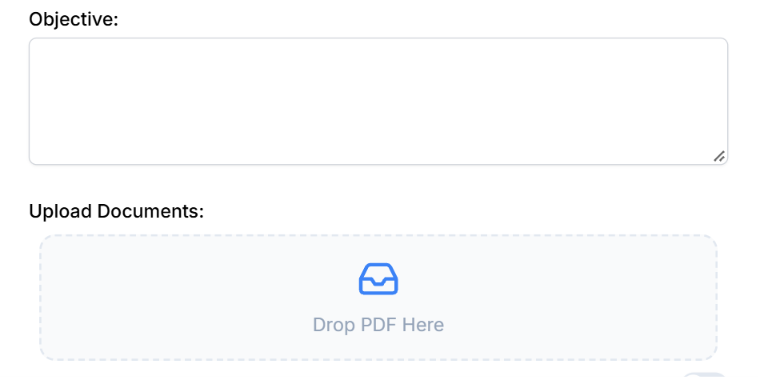
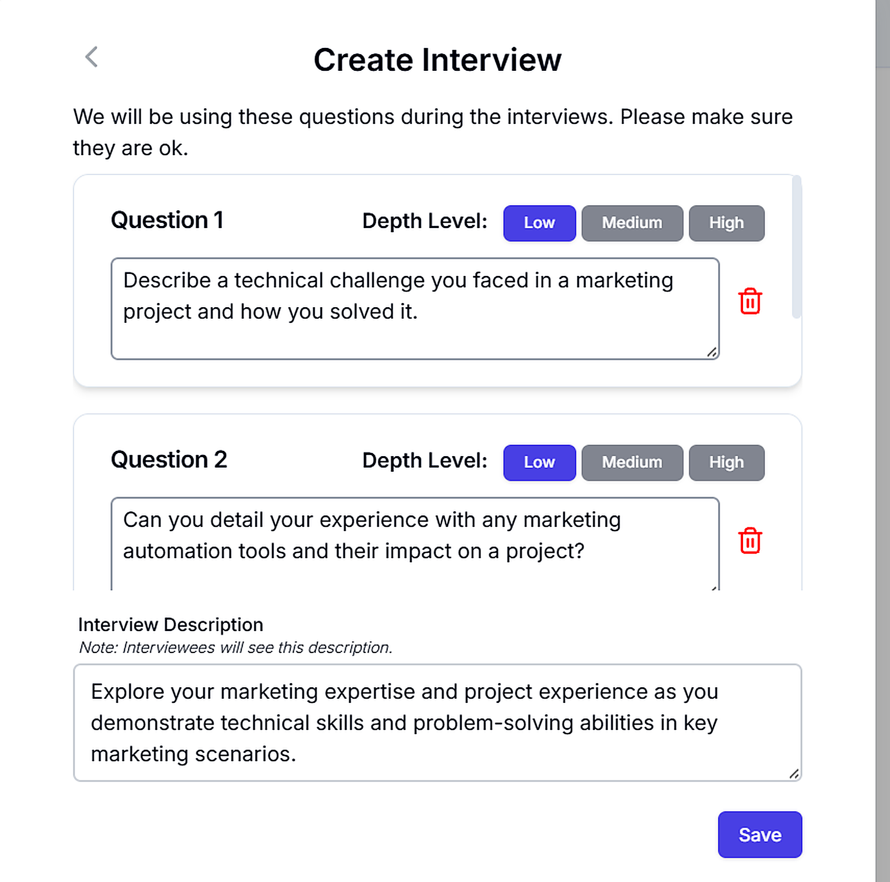
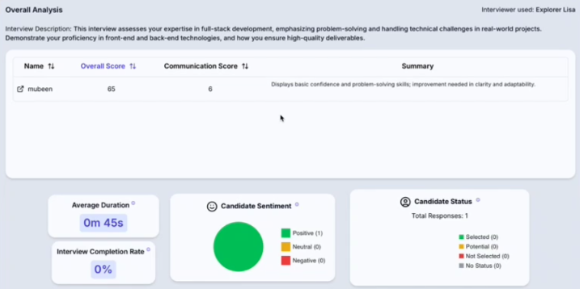

At Samaarav, we specialize in AI-Powered Hiring & Voice Screening Solutions, helping businesses like yours reach top-tier talent faster, eliminate screening backlogs, and drive recruitment efficiency through automated, intelligent candidate interviews. Powered by our proprietary voice agent technology, QwikRecruiters conducts end-to-end evaluations, dynamic follow-up questioning, and real-time sentiment scoring—delivering superhuman recruitment velocity with precision.
Everything talent acquisition and HR teams need to scale candidate pipelines without compromising evaluation quality.
Create dynamic, responsive interview dialogues delivered in natural voice. Meet your AI interviewers like Explorer Lisa and Empathetic Bob, capable of asking intelligent follow-up questions tailored to candidates' individual responses.

Simply upload your existing job descriptions, company guidelines, or custom prompts. QwikRecruiters parses complex requirements instantly, formulating relevant questions exactly as your best senior interviewers would.

Leverage AI to automatically generate smart, role-specific questions spanning technical acumen and behavioral scenarios. Configure depth levels and criteria descriptions so candidates understand context and are assessed objectively.

Empower your recruitment team with actionable insights: communication scores, sentiment analysis, confidence ratings, and AI executive summaries to make data-driven hiring decisions in seconds.

A seamless recruitment pipeline from setup to candidate selection, directly sourced from the platform.
Easily create and manage organizations with Clerk. Upload your company logo, set your custom slug, and invite team members to collaborate instantly.
Get to know your AI-powered interviewers like Explorer Lisa and Empathetic Bob. Agents conduct interviews naturally, adapting tone and style for a human-like experience.
Upload documents or prompts and QwikRecruiters will understand them and formulate relevant, deeply contextual interview questions like your top recruiters would.
Review, curate, and configure questions for interviews. Add depth levels and descriptions so candidates understand context clearly and perform at their best.
Leverage generative AI to automatically generate smart, role-specific technical and behavioral questions, ensuring every candidate is evaluated fairly and consistently.
Easily share your interview link with candidates across LinkedIn, job boards, or direct messaging to invite hundreds to participate asynchronously.
Scale your hiring pipeline at your own pace with no hidden fees. Directly from QwikRecruiters.
Perfect for individuals and boutique recruiters
Best value for growing hiring teams & agencies
For scale-ups and high-volume organizations
Hear from HR professionals and recruiters who transformed their screening speed with QwikRecruiters.
"This platform transformed our hiring process! Conducting hundreds of screenings in a day is now effortless, and the analytics help us identify top talent faster than ever."
"The human-like conversations are so realistic that candidates feel they're talking to a real person. It's an absolute game-changer for candidate engagement."
"The ability to upload job descriptions and let the AI generate relevant questions is a huge time-saver. It allows me to focus on strategic planning rather than repetitive initial phone screens."